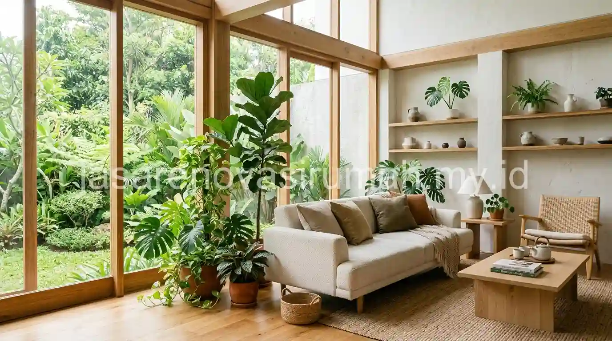
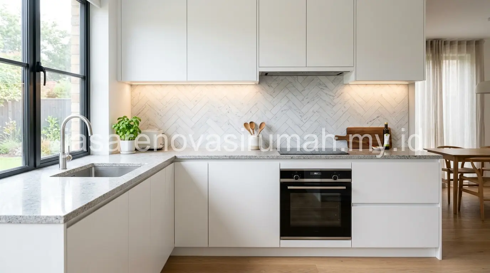

Jasa desain interior Malang saat ini banyak diminati untuk mewujudkan gaya Japandi yang hangat dan menenangkan, maupun Modern Klasik yang elegan, dengan proses pengerjaan mulai dari layout plan, visualisasi 3D, hingga produksi custom furniture berbahan HPL yang tahan lama. Kebutuhan interior yang matang secara desain sekaligus fungsional menjadi semakin penting, terutama bagi pemilik rumah yang ingin ruang di dalam rumah benar-benar mencerminkan gaya hidup dan kenyamanan sehari-hari, bukan sekadar mengikuti tren sesaat.
Apa Perbedaan Gaya Interior Japandi dan Modern Klasik yang Sedang Diminati di Malang?
Japandi memadukan kesederhanaan Jepang dengan kehangatan Skandinavia lewat material kayu natural dan warna netral, sementara Modern Klasik menonjolkan elemen elegan seperti detail molding, warna gelap pekat, dan furnitur dengan garis lebih formal.
Berikut perbandingan karakter kedua gaya tersebut:
| Aspek | Japandi | Modern Klasik |
|---|---|---|
| Warna dominan | Krem, putih gading, cokelat kayu muda | Abu tua, navy, emas sebagai aksen |
| Material utama | Kayu natural, linen, rotan | Kayu solid gelap, marmer, logam finishing emas |
| Kesan ruang | Tenang, hangat, lapang | Elegan, mewah, formal |
| Cocok untuk | Rumah minimalis modern, keluarga muda | Rumah dengan langit-langit tinggi, ruang tamu formal |
Pemilihan gaya sebaiknya juga mempertimbangkan karakter arsitektur rumah itu sendiri, karena gaya Japandi umumnya lebih mudah diselaraskan dengan rumah minimalis modern tropis yang banyak dibangun di Malang, sementara Modern Klasik lebih cocok pada rumah dengan proporsi ruang yang lebih luas dan langit-langit tinggi.
Bagaimana Tahapan Pengerjaan Interior dari Layout Plan hingga Custom Furniture?
Tahapan pengerjaan interior dimulai dari survey dan pengukuran ruangan, penyusunan layout plan, visualisasi 3D untuk persetujuan konsep, hingga produksi dan instalasi custom furniture di lokasi.
Berikut alur pengerjaan yang umum dijalani dalam proyek desain interior:
| Tahap | Aktivitas | Keluaran |
|---|---|---|
| Survey & pengukuran | Kunjungan ke lokasi, pengukuran detail ruangan | Data dimensi ruangan yang akurat |
| Layout plan | Penyusunan tata letak furnitur dan sirkulasi ruang | Denah layout 2D |
| Visual 3D | Pembuatan render untuk menggambarkan hasil akhir | Gambar visual 3D tiap ruangan |
| Revisi & persetujuan | Diskusi dan penyesuaian berdasarkan masukan klien | Desain final yang disepakati |
| Produksi furniture | Pembuatan furniture custom di workshop | Furniture sesuai spesifikasi desain |
| Instalasi | Pemasangan furniture dan finishing di lokasi | Ruangan siap digunakan |
Proses layout plan dan visual 3D ini penting dilakukan secara matang sebelum masuk ke tahap produksi, karena perubahan desain setelah furniture mulai diproduksi biasanya membutuhkan biaya tambahan yang cukup signifikan. Tahapan interior ini idealnya berjalan setelah desain arsitektur rumah sudah final, sejalan dengan alur kerja yang dibahas pada jasa arsitek Malang, agar tata ruang dalam benar-benar menyesuaikan bentuk dan orientasi bangunan yang sudah dirancang sebelumnya.
Apa Keunggulan Material HPL untuk Furniture Custom Dibanding Material Lain?
HPL (High Pressure Laminate) memberikan permukaan yang tahan gores, tahan air, dan tersedia dalam banyak pilihan motif, menjadikannya material yang efisien dari sisi biaya maupun perawatan untuk furniture custom rumah tinggal.
Berikut beberapa keunggulan HPL yang membuatnya banyak dipilih untuk furniture custom:
- Permukaan yang lebih tahan gores dan noda dibanding cat duco atau politur kayu solid.
- Pilihan motif yang beragam, termasuk motif kayu, marmer, hingga warna solid polos.
- Harga yang lebih terjangkau dibanding kayu solid dengan hasil akhir yang tetap rapi.
- Perawatan yang mudah, cukup dilap tanpa memerlukan produk perawatan khusus secara berkala.
Meski demikian, pemilihan material tetap perlu disesuaikan dengan fungsi furniture. Untuk area yang sering terkena kelembapan tinggi seperti dekat kamar mandi, kombinasi HPL dengan bahan multipleks yang sudah dilapisi anti rayap tetap disarankan agar furniture lebih awet dalam jangka panjang.

Bagaimana Menentukan Gaya Interior yang Sesuai dengan Karakter Keluarga?
Menentukan gaya interior sebaiknya dimulai dari mendiskusikan kebiasaan sehari-hari anggota keluarga, bukan sekadar memilih gaya yang sedang tren di media sosial.
Beberapa pertanyaan yang bisa membantu menentukan gaya interior yang tepat:
- Apakah keluarga lebih sering berkumpul di ruang terbuka atau menghabiskan waktu di kamar masing-masing?
- Apakah ada anak kecil yang membutuhkan furniture dengan sudut aman dan material yang mudah dibersihkan?
- Apakah rumah lebih sering digunakan untuk menerima tamu formal atau lebih bersifat privat untuk keluarga inti?
- Berapa anggaran yang tersedia, karena gaya Modern Klasik dengan material premium umumnya membutuhkan biaya lebih besar dibanding Japandi yang lebih sederhana?
Diskusi awal seperti ini membantu desainer interior mengarahkan konsep yang benar-benar sesuai kebutuhan, bukan hanya mengikuti preferensi visual semata tanpa mempertimbangkan fungsi harian rumah tersebut. Jika Anda membutuhkan layanan desain interior profesional, tim kami siap membantu melalui jasa desain interior kami yang mencakup konsultasi hingga instalasi furniture.
Berapa Kisaran Waktu Pengerjaan Proyek Interior Rumah di Malang?
Durasi pengerjaan interior rumah tinggal skala menengah umumnya membutuhkan waktu beberapa minggu hingga dua bulan, tergantung jumlah ruangan yang dikerjakan dan tingkat kerumitan custom furniture yang dipesan.
Proyek yang hanya mencakup satu atau dua ruangan seperti ruang tamu dan kamar tidur utama biasanya bisa diselesaikan lebih cepat dibanding proyek yang mencakup seluruh rumah, termasuk dapur dan kamar anak. Faktor lain yang memengaruhi durasi adalah kapasitas produksi workshop furniture dan ketersediaan material HPL dengan motif tertentu yang dipilih klien.
Kesalahan Umum Saat Menggunakan Jasa Desain Interior
Kesalahan yang paling sering terjadi adalah tidak menyampaikan anggaran secara terbuka sejak awal, sehingga desainer mengusulkan konsep yang ternyata melebihi kemampuan biaya klien.
Kesalahan lain yang perlu dihindari:
- Terlalu sering mengganti pilihan gaya di tengah proses desain sehingga menghambat progres pengerjaan.
- Tidak memeriksa detail spesifikasi material pada gambar kerja sebelum furniture diproduksi.
- Mengabaikan kebutuhan penyimpanan jangka panjang demi mengejar tampilan visual yang minimalis.
Pada akhirnya, jasa desain interior Malang yang tepat mampu menerjemahkan gaya Japandi maupun Modern Klasik ke dalam ruang yang nyaman dan fungsional bagi keluarga Anda, lengkap dengan furniture custom berbahan HPL yang efisien dari sisi biaya dan perawatan. Untuk gambaran tarif perancangan sebelum memulai proyek, Anda bisa mempelajari lebih lanjut tarif jasa arsitek Malang per m2 sebagai referensi tambahan, terutama jika proyek Anda mencakup perancangan arsitektur sekaligus interior secara menyeluruh.

Ainur Reza
Penulis Profesional & Praktisi Konstruksi
Ainur Reza adalah seorang penulis profesional yang memiliki ketertarikan mendalam pada dunia arsitektur dan konstruksi. Dengan pengalaman bertahun-tahun mengamati tren renovasi rumah, ia aktif membagikan panduan praktis, tips RAB, dan wawasan seputar material bangunan untuk membantu pemilik rumah mewujudkan hunian impian mereka dengan anggaran yang efisien.